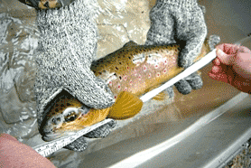
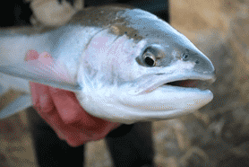

What the TRAA is about
Hands on Environmentalism
HANDS ON
ENVIRONMENTALISM
This is what sets the TRAA apart from other clubs and organizations. You’ll find us right in the water clearing obstructions from streams, measuring returning salmonids & taking samples for DNA analysis, education through trout hatchery tours & stream walks, being a voice for the Thames River watershed & its inhabitants. The list goes on.
Make A Difference
MAKE A DIFFERENCE
The TRAA has a history of always having a core group of active members supported by those who just want to be part of the solution. Either way, every member of the TRAA is active in their advocacy for the health of the Thames River watershed and its inhbitants.
Meetings Every Month
MEETINGS EVERY
MONTH
The TRAA meets every second Wednesday of each month. We always try to get the meetings started by 7:00pm so try to be there a few minutes beforehand. The venue is the Western Ontario Fish & Game Protective Association's clubhouse located just east of the Dearness Home on Southdale Road (East), on the North side of Southdale Road. The address is 790 Southdale Road East, London, Ontario.